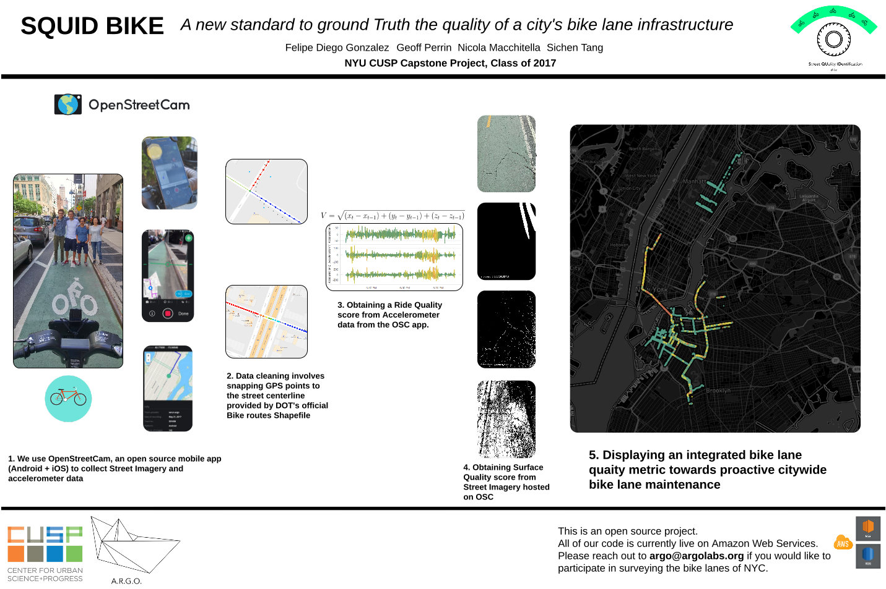
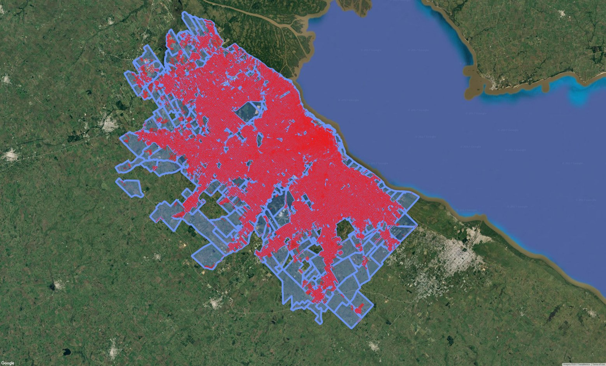
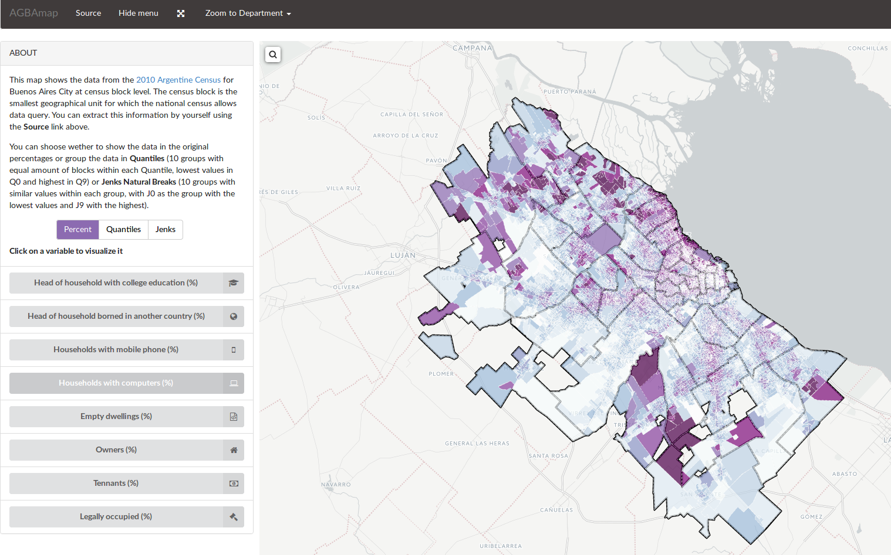

Felipe González | CV online
Texto de la BIO
Proyectos
Squid Bike
Uso de sensores (GPS, cámara y acelerómetro) de celular y Raspberry Pi para capturar datos de ciclovías y bicisendas para determinar la condición de los mismos utilizando computer vision y detección de outliers.
Bikeshare and Subway cooperation in the commute

Algoritmo de optimización de ubicación de bicicletas públicas en Ciudad de Buenos Aires en base a anaĺisis de redes (location allocation), información censal y Google Distance Matrix API.
Determinación del area urbana de Gran Buenos Aires con datos abiertos de Open Street Map
Determinar de manera automática y replicable que porción de los radios censales del Censo 2010 se encuentran efectivamente poblados y merecen la categorización de espacio urbano en base a cartografía censal y datos abiertos de Open Street Map.
AGBA viz
Visualización de variables seleccionadas del Censo 2010 para la Algomeración Gran Buenos Aires en D3, Leaflet y JavaScript